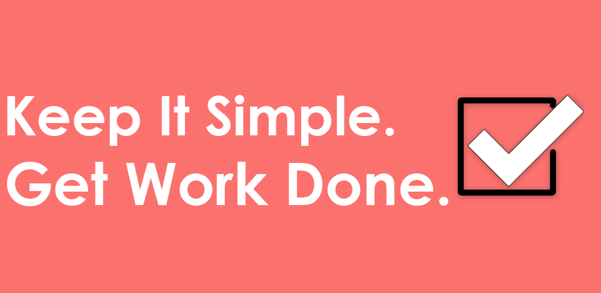

Task Tracker Mobile App


Why did I do this project?
The Task Tracker application originally started out as an open-ended school project. I was able to pick the application I made and just had to work with a DB and meet some other requirements. However, I decided to take the application to being a fully functional application published on the google play store. This project also allowed me enough creative freedom to learn some decoupled programming patterns. In the project I used a combination of dependency injection, clean architecture, and MVVM.
.NET Maui
Using .NET and C# introduced me to another side of programming where having a package manager made life a lot easier than I am used to in C++. A package that I used for this project is .NET Maui, which seeks to replace XARMIN forms and allows developers to create a cross platform with a single code base and just some build file specifications. One of the key features of .NET Maui that I used to decouple the application was its native support for dependency injection. By defining Interfaces to inject in the Maui Project file, I was able to seamlessly abstract away entire projects of code.
Clean Architecture
Incorporating clean architecture into the application, separated into four distinct projects - Database, Use Cases, View Models, and Views - brings a host of significant benefits. This modular approach enhances maintainability, allowing for easier updates and modifications to individual components without impacting the overall system. Each isolated layer improves the testability of the application, enabling focused and efficient unit testing. Flexibility is another key advantage; changes in one module, such as the database or user interface, can be implemented with minimal effect on other parts of the application. This architecture also facilitates parallel development, as different teams can concurrently work on separate layers, thus accelerating the development process. Furthermore, the clear separation of concerns makes the application more intuitive and easier to navigate, particularly beneficial for new developers joining the project. Lastly, centralizing business logic in the Use Cases layer ensures consistent and reliable application behavior, adhering to defined business rules and logic.
MVVM
The Task Tracker Application implements the Model-View-View Model (MVVM) design pattern, leveraging the capabilities of the Community. Toolkit within the .NET Maui framework. This integration facilitates an efficient architecture, where the 'Use Cases' and 'Database' projects collectively serve as the Model. These components are responsible for directly managing and controlling data. In this architecture, .NET Maui's built-in dependency injection plays a pivotal role. It seamlessly connects the Model components with other parts of the application, ensuring a smooth flow of data and functionality.
The View Model layer is embodied by the View Model classes within the Task Tracker Project. These classes are crucial in abstracting and handling the communication between the Model and the Views. This abstraction is vital for maintaining a clean separation of concerns, a core principle of the MVVM pattern. In the context of this application, the Views are represented by the app content pages. They are designed to interact with the View Model, which in turn, deals with the Model. This setup not only enhances maintainability and testability but also
Unit Testing
The primary objective of this testing plan is to validate the functionality and reliability of all CRUD (Create, Read, Update, Delete) operations performed on the database. This encompasses ensuring that these operations provide accurate, consistent, and reliable data manipulation. The plan aims to cover various scenarios, including normal operations, edge cases, and error handling, to comprehensively assess the robustness of the database interactions.
The testing was conducted using the xUnit testing framework. To simulate the database environment without affecting the actual SQLite database, the project leverages an in-memory database. This approach facilitates testing in a controlled environment, allowing for the isolation of database operations. The in-memory database is designed to replicate the behavior of the actual database, enabling a thorough evaluation of CRUD functionalities. The tests will be executed to assess the correctness of the database operations, with particular attention to the consistency of the data returned and the system's response to various input conditions. The test results will provide insights into the performance and reliability of the database operations, forming the basis for any necessary refinements or optimizations.
What did I learn?
The primary objective of this testing plan is to validate the functionality and reliability of all CRUD (Create, Read, Update, Delete) operations performed on the database. This encompasses ensuring that these operations provide accurate, consistent, and reliable data manipulation. The plan aims to cover various scenarios, including normal operations, edge cases, and error handling, to comprehensively assess the robustness of the database interactions.
I walked away from this project with a lot of practice on knowledge that was only theoretical to me previously. I was able to work closely with scalable programing patterns to create a sturdy code base, test my code with proper unit testing, and go through the process of publishing an app to the public. This app was meant to be a simple way to track to-do list without the bloat that comes with larger platforms. Overall I accomplished my goals.